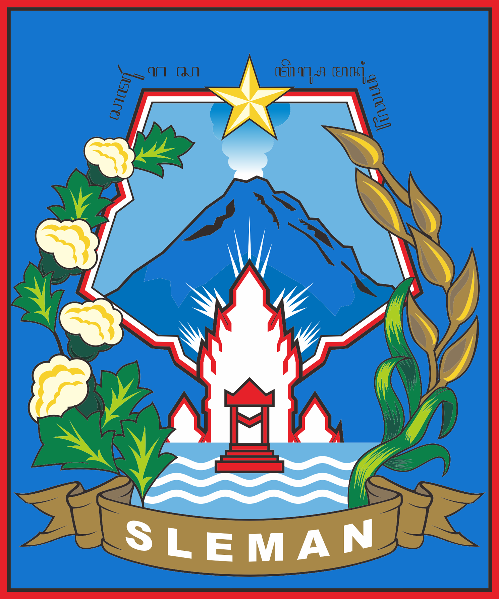

<!DOCTYPE html>
<html lang="en">

<head>
  <meta charset="utf-8">
    <meta name="viewport" content="initial-scale=1,user-scalable=no,maximum-scale=1,width=device-width">
    <meta name="mobile-web-app-capable" content="yes">
    <meta name="apple-mobile-web-app-capable" content="yes">
    <meta name="author" content="DIVSIG UGM">
    <meta name="description" content="leaflet basic">

    <!-- Judul pada tab browser -->
    <title>Leaflet JS - Map Geoserver</title>

    <!-- Leaflet CSS Library -->
    <link rel="stylesheet" href="https://unpkg.com/leaflet@1.5.1/dist/leaflet.css">

    <!-- Tab browser icon -->
    <link rel="icon" type="image/x-icon" href="http://luk.staff.ugm.ac.id/logo/UGM/Resmi/Warna.gif">

    <style>
        /* Tampilan peta fullscreen */
        html,
        body,
        #map {
            height: 100%;
            width: 100%;
            margin: 0px;
        }
    </style>
</head>

<body>
  <div id="map"></div>

  <script src="https://code.jquery.com/jquery-3.6.0.min.js"></script>
  <script src="https://unpkg.com/leaflet@1.7.1/dist/leaflet.js"></script>
  <script>

    var map = L.map('map').setView([-7.7956, 110.3695], 11);

    L.tileLayer('https://{s}.tile.openstreetmap.org/{z}/{x}/{y}.png', {
      maxZoom: 19,
      attribution: 'Map data © <a href="https://www.openstreetmap.org/copyright">OpenStreetMap</a> contributors'
    }).addTo(map);

    var wfsgeoserver1 = L.geoJson(null, {
      pointToLayer: function (feature, latlng) {
        return L.marker(latlng, {
          icon: L.icon({
            iconUrl: "assets/img/marker/hospital.png",
            iconSize: [20, 20],
            iconAnchor: [16, 32],
            popupAnchor: [0, -32],
            tooltipAnchor: [16, -20]
          })
        });
      },
      onEachFeature: function (feature, layer) {
        var content = "Nama Kecamatan : " + feature.properties.kecamatan + "<br>" +
          "Status Aktif Covid : " + feature.properties.aktif + "<br>" +
          "Jumlah Meninggal : " + feature.properties.meninggal + "<br>" +
          "Jumlah Sembuh : " + feature.properties.sembuh + "<br>" +
          "";

        layer.on({
          click: function (e) {
            wfsgeoserver1.bindPopup(content).openPopup();
          },
          mouseover: function (e) {
            wfsgeoserver1.bindTooltip(feature.properties.nama).openTooltip();
          },
          mouseout: function (e) {
            wfsgeoserver1.closePopup();
            wfsgeoserver1.closeTooltip();
          }
        });
      }
    });


    $.getJSON("wfsgeoserver1.php", function (data) {
      wfsgeoserver1.addData(data);
      wfsgeoserver1.addTo(map);
      map.fitBounds(wfsgeoserver1.getBounds());
    });

  </script>
</body>

</html>